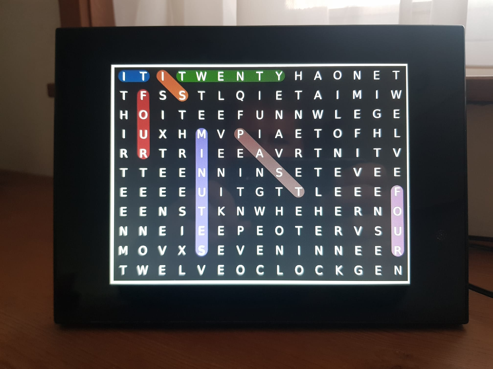
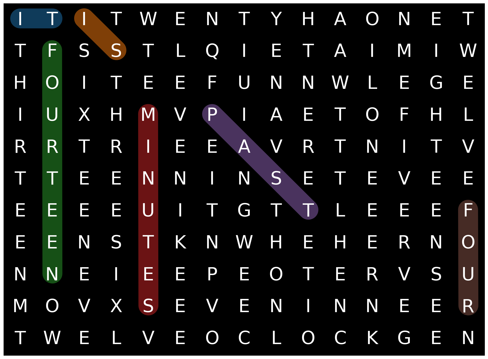

import matplotlib.pyplot as plt
import string
import osA few weeks ago, my clock stopped working, and I wasn’t inclined to invest in a replacement. After futile attempts to revive it, I decided to get crafty. I had an unused photo frame collecting dust and realized it could be turned into a clock by making it display images that show the time of the day. I’d need one image for every minute of the day and display each of them for 60 seconds before transitioning to the next one.
Using pictures that show a digital clock seemed too mundane. Analog faces felt a bit lackluster. Then it hit me—why not combine the charm of word clocks with the visuals of a word search puzzle? The outcome: a word clock that shows words not just horizontally but also vertically and diagonally. Brilliant, if I may say so myself.

Every minute, the photo frame displays an image featuring a different set of highlighted words that indicate the current time.
Curious about how I generated these images? Dive into the details below.
Design decisions
Arranging words in a grid
My intention was to position words both horizontally, vertically, and diagonally, similar to word search puzzles, allowing for occasional partial overlaps. To ensure a singular way of reading the time, I established the following criteria:
- Each letter can only be the first letter in a word once.
- Words should follow a specific order.
- Due to varying word orientations, the first letter in each word dictates the reading sequence.
In simpler terms, by scanning the grid left to right and top to bottom and identifying whether each letter marks the beginning of a word, one can deduce the time. Applying this method to the image above reveals the time as “It is twenty-four minutes past four.”
Telling time in English
For time expression, I adopted the following format:
- Top of the hour:
- “It is [number] o’clock.”
- Example: “It is two o’clock.”
- “It is [number] o’clock.”
- Times after the top of the hour:
- “It is [minutes] past [number].”
- Example: “It is eleven minutes past three.”
- “It is [minutes] past [number].”
- Times before the top of the hour:
- “It is [minutes] to [next hour].”
- Example: “It is twenty-three minutes to five.”
- “It is [minutes] to [next hour].”
(Note: We use “half” for thirty minutes and “a quarter” for fifteen minutes.)
Language nuances
According to the Cambridge dictionary, for multiplies of five, the word “minutes” can be omitted. This might be a British-English specific convention but I decided to follow it anyways.
While Americans might use “after” instead of “past,” and many English speakers tend to omit the word “minutes” in everyday speech, I opted for “past” and excluded “minutes” only for multiples of five.
Simplifications
I decided against adding phrases like “in the morning” or “in the afternoon”, limiting the generation to only 720 images (12 hours * 60 minutes).
The word “fourteen” contains “four,” and likewise, “sixteen” encompasses “six.” By positioning “fourteen,” “sixteen,” “seventeen,” “eighteen,” and “nineteen,” we inherently include “four,” “six,” “seven,” “eight,” and “nine.” This ensures the grid remains compact.
Importing libraries
We’ll start by importing libraries. We use matplotlib to draw the images.
Specifying the word order
The following graph specifies the order in which words must be placed on the grid.
In code this can be specified as follows:
# Words to fill. Each tuple is (ID, word, preceding)
words = [
(0, "it", []),
(1, "is", [0]),
(2, "twenty", [1]),
(3, "half", [1]),
(4, "ten", [1]),
(5, "eleven", [1]),
(6, "twelve", [1]),
(7, "thirteen", [1]),
(8, "fourteen", [2]),
(9, "sixteen", [2]),
(10, "seventeen", [2]),
(11, "eighteen", [2]),
(12, "nineteen", [2]),
(13, "a", [1]),
(14, "quarter", [13]),
(15, "one", [2]),
(16, "two", [2]),
(17, "three", [2]),
(18, "five", [2]),
(19, "minutes", [15, 16, 17, 8, 9, 10, 11, 12, 5, 6, 7]),
(20, "past", [19, 18, 4, 14, 2, 3]),
(21, "to", [19, 18, 4, 14, 2]),
(22, "one", [20, 21]),
(23, "two", [20, 21]),
(24, "three", [20, 21]),
(25, "four", [20, 21]),
(26, "five", [20, 21]),
(27, "six", [20, 21]),
(28, "seven", [20, 21]),
(29, "eight", [20, 21]),
(30, "nine", [20, 21]),
(31, "ten", [20, 21]),
(32, "eleven", [20, 21]),
(33, "twelve", [20, 21]),
(34, "oclock", [22, 23, 24, 25, 26, 27, 28, 29, 30, 31, 32, 33])
]Each word is specified by a tuple of the form (id, word, preceding). The id is an integer that uniquely identifies the word. The word is the word to be placed. The preceding is a list of integers that specify which words must be placed before this word.
Filling the grid
We ensure that each word is readable in either a left-to-right or top-down direction, never in reverse.
directions = [(1, 0), (0, 1), (1, 1), (1, -1)]The following function returns a list of identifiers of words that are ready to be placed in the grid. This is done by checking if all preceding words are placed in the grid. If so, the word is ready to be placed. At first, the only word that can be placed is the word it because its list of preceding words is empty.
def placeable_word_ids(words):
unplaced_word_ids = [id for (id, _, loc, _, _) in words if loc is None]
return [id for (id, _, loc, _, prec) in words if not any(prec_id in unplaced_word_ids for prec_id in prec) and loc is None]The following function checks is a word can be placed in the grid in a given direction and location.
def can_place_word(word, grid, dir, r, c):
height = len(grid)
width = len(grid[0])
d_x, d_y = dir
if c + len(word) * d_x > width or r + len(word) * d_y > height or c + len(word) * d_x < 0 or r + len(word) * d_y < 0:
return False
for i, ch in enumerate(word):
if grid[r + i * d_y][c + i * d_x] not in ['?', ch]:
return False
return TrueIf a word can be placed, we call the following function to place it. The original content is returned so we can backtrack later.
def replace_characters(word, grid, dir, r, c):
height = len(grid)
width = len(grid[0])
previous = ""
d_x, d_y = dir
for i, ch in enumerate(word):
previous += grid[r + i * d_y][c + i * d_x]
grid[r + i * d_y][c + i * d_x] = ch
return previousA recursive generator function attempts to fill a grid with words. It uses backtracking to explore possible word placements in different directions.
def fill_grid_(grid, words, i=0):
height = len(grid)
width = len(grid[0])
ids = placeable_word_ids(words)
if not ids:
yield grid, words
elif i < height * width:
row = i // width
col = i % width
for id in ids:
dir_length = len(directions)
for d in range(dir_length):
dir = directions[(i + d) % dir_length]
if can_place_word(words[id][1], grid, dir, row, col):
previous = replace_characters(words[id][1], grid, dir, row, col)
words[id] = (id, words[id][1], (col, row), dir, words[id][4])
yield from fill_grid_(grid, words, i+1)
words[id] = (id, words[id][1], None, None, words[id][4])
replace_characters(previous, grid, dir, row, col)
else:
yield from fill_grid_(grid, words, i+1)The function fill_grid is a wrapper function that initializes the grid and calls fill_grid_.
def fill_grid(width, height):
loc_dir_words = [(id, word, None, None, prec) for (id, word, prec) in words]
grid = [['?' for c in range(width)] for r in range(height)]
yield from fill_grid_(grid, loc_dir_words, 0)We call this wrapper function as follows:
gen = fill_grid(15, 11)
(g, w) = next(gen)This returns a filled grid with a width of 15 and a height of 11. These dimensions were found experimentally. The digital photo frame that I’m using has an aspect ratio of 4:3. It makes sense to use a grid with a similar aspect ratio. I started with a width of 16 and height of 12, but that yielded grids with too many unoccupied spaces. Using 15 by 11 deviates only slightly from a 4:3 aspect ratio.
Let’s look at the grid.
g[['i', 't', 'i', 't', 'w', 'e', 'n', 't', 'y', 'h', 'a', 'o', 'n', 'e', 't'],
['t', 'f', 's', 's', '?', 'l', 'q', 'i', 'e', 't', 'a', '?', '?', 'i', 'w'],
['h', 'o', 'i', 't', 'e', 'e', 'f', 'u', 'n', 'n', 'w', 'l', '?', 'g', 'e'],
['i', 'u', 'x', 'h', 'm', 'v', 'p', 'i', 'a', 'e', 't', 'o', 'f', 'h', 'l'],
['r', 'r', 't', 'r', 'i', 'e', 'e', 'a', 'v', 'r', 't', 'n', 'i', 't', 'v'],
['t', 't', 'e', 'e', 'n', 'n', 'i', 'n', 's', 'e', 't', 'e', 'v', 'e', 'e'],
['e', 'e', 'e', 'e', 'u', 'i', 't', 'g', 't', 't', 'l', 'e', 'e', 'e', 'f'],
['e', 'e', 'n', 's', 't', '?', 'n', 'w', 'h', 'e', 'h', 'e', 'r', 'n', 'o'],
['n', 'n', '?', 'i', 'e', '?', '?', 'e', 'o', 't', 'e', 'r', 'v', '?', 'u'],
['?', '?', '?', 'x', 's', 'e', 'v', 'e', 'n', '?', '?', 'n', 'e', 'e', 'r'],
['t', 'w', 'e', 'l', 'v', 'e', 'o', 'c', 'l', 'o', 'c', 'k', '?', 'e', 'n']]And how the words are placed.
w[(0, 'it', (0, 0), (1, 0), []),
(1, 'is', (2, 0), (1, 1), [0]),
(2, 'twenty', (3, 0), (1, 0), [1]),
(3, 'half', (9, 0), (1, 1), [1]),
(4, 'ten', (7, 0), (1, 1), [1]),
(5, 'eleven', (5, 0), (0, 1), [1]),
(6, 'twelve', (14, 0), (0, 1), [1]),
(7, 'thirteen', (0, 1), (0, 1), [1]),
(8, 'fourteen', (1, 1), (0, 1), [2]),
(9, 'sixteen', (2, 1), (0, 1), [2]),
(10, 'seventeen', (3, 1), (1, 1), [2]),
(11, 'eighteen', (13, 0), (0, 1), [2]),
(12, 'nineteen', (6, 0), (1, 1), [2]),
(13, 'a', (10, 0), (1, 1), [1]),
(14, 'quarter', (6, 1), (1, 1), [13]),
(15, 'one', (11, 0), (1, 0), [2]),
(16, 'two', (9, 1), (1, 1), [2]),
(17, 'three', (3, 2), (0, 1), [2]),
(18, 'five', (6, 2), (1, 1), [2]),
(19, 'minutes', (4, 3), (0, 1), [15, 16, 17, 8, 9, 10, 11, 12, 5, 6, 7]),
(20, 'past', (6, 3), (1, 1), [19, 18, 4, 14, 2, 3]),
(21, 'to', (10, 3), (1, 0), [19, 18, 4, 14, 2]),
(22, 'one', (11, 3), (0, 1), [20, 21]),
(23, 'two', (6, 6), (1, 1), [20, 21]),
(24, 'three', (9, 6), (1, 1), [20, 21]),
(25, 'four', (14, 6), (0, 1), [20, 21]),
(26, 'five', (12, 3), (0, 1), [20, 21]),
(27, 'six', (3, 7), (0, 1), [20, 21]),
(28, 'seven', (4, 9), (1, 0), [20, 21]),
(29, 'eight', (5, 4), (1, 1), [20, 21]),
(30, 'nine', (4, 5), (1, 1), [20, 21]),
(31, 'ten', (0, 5), (1, 1), [20, 21]),
(32, 'eleven', (9, 5), (1, 1), [20, 21]),
(33, 'twelve', (0, 10), (1, 0), [20, 21]),
(34,
'oclock',
(6, 10),
(1, 0),
[22, 23, 24, 25, 26, 27, 28, 29, 30, 31, 32, 33])]Occupying vacant spaces in the grid
Not all spaces in the grid are filled as indicated by the question marks. Let’s see how many are empty.
sum(row.count('?') for row in g)15We can fill these spaces with some sage words.
def remove_spaces_and_punctuation(input_string):
# Remove spaces
no_spaces = input_string.replace(" ", "")
# Remove punctuation
translator = str.maketrans("", "", string.punctuation)
no_punctuation = no_spaces.translate(translator)
return no_punctuationdef replace_question_marks(grid, phrase):
chars = remove_spaces_and_punctuation(phrase)
i = 0
for row in range(len(grid)):
for col in range(len(grid[row])):
if grid[row][col] == '?' and i < len(chars):
grid[row][col] = chars[i]
i += 1replace_question_marks(g, "Time keeps moving")Spaces and interpunctions are removed before the phrase is placed in the grid.
Plotting the grid
Now, we’re ready to visualize the grid using matplotlib. To do so, I defined a few helper functions.
The following function converts a time to a sentence. The time is given in hours and minutes. The function returns a sentence that describes the time.
def time_to_sentence(hours, minutes):
# Define words for numbers
time_words = ["twelve", "one", "two", "three", "four", "five", "six", "seven", "eight", "nine", "ten",
"eleven", "twelve", "thirteen", "fourteen", "a quarter", "sixteen", "seventeen", "eighteen", "nineteen", "twenty",
"twenty-one", "twenty-two", "twenty-three", "twenty-four", "twenty-five", "twenty-six", "twenty-seven", "twenty-eight", "twenty-nine", "half"]
# Convert hours and minutes to words
if minutes <= 30:
hour_word = time_words[hours % 12]
minute_word = time_words[minutes]
else:
hour_word = time_words[(hours+1) % 12]
minute_word = time_words[60 - minutes]
# Determine whether it's past or to
if minutes == 0:
time_phrase = f"it is {hour_word} o'clock"
elif minutes in [5, 10, 15, 20, 25, 30]:
time_phrase = f"it is {minute_word} past {hour_word}"
elif minutes in [35, 40, 45, 50, 55]:
time_phrase = f"it is {minute_word} to {hour_word}"
elif minutes == 1:
time_phrase = f"it is {minute_word} minute past {hour_word}"
elif minutes == 59:
time_phrase = f"it is {minute_word} minute to {hour_word}"
elif minutes < 30:
time_phrase = f"it is {minute_word} minutes past {hour_word}"
else:
time_phrase = f"it is {minute_word} minutes to {hour_word}"
return time_phraseLet’s test this function.
print(time_to_sentence(10, 23))
print(time_to_sentence(0, 8))it is twenty-three minutes past ten
it is eight minutes past twelveWe use a helper function that returns the word at a given location.
def word_at_location(words, r, c):
for (id, word, (x, y), dir, prec) in words:
if x == c and y == r:
return (id, word, (x, y), dir, prec)
return None The following function then finally plots the grid using matplotlib. It calls the time_to_sequence function to get a sentence that describes the time. This sentence is then split into words and the words are then highlighted in the grid. It loops through the positions in the grid from top-left to bottom-right and checks, using word_at_location, whether the word that starts at that position matches the next word in the sentence. If so, the word is highlighted.
def plot_grid(grid, words=None, hours=None, minutes=None, ax=None):
if not ax:
# Create a figure and axes
fig, ax = plt.subplots(figsize=(12,9))
else:
fig = None
# Give all cells the same value/color
ax.imshow([[0 for cell in row] for row in grid], cmap='gray')
ax.patch.set_edgecolor('black')
ax.patch.set_linewidth(2)
# Display the letters
for i in range(len(grid)):
for j in range(len(grid[0])):
ax.text(j, i, grid[i][j].upper(), ha='center', va='center', fontsize=32, color='white')
# Highlight the time
if not None in [hours, minutes, words]:
# Highlight the time
time_sentence = time_to_sentence(hours, minutes)
time_sentence = time_sentence.replace("-", " ")
time_sentence = time_sentence.replace("'", "")
time_words = time_sentence.split()
i = 0
for r in range(len(grid)):
for c in range(len(grid[0])):
word_at_loc = word_at_location(words, r, c)
if word_at_loc:
(_, word, (x, y), (d_x, d_y), _) = word_at_loc
if i < len(time_words) and time_words[i] == word[:len(time_words[i])]:
x_values = [x, x + d_x * (len(time_words[i])-1) + 0.01]
y_values = [y - 0.05, y + d_y * (len(time_words[i])-1) - 0.05]
ax.plot(x_values, y_values, linewidth=35, solid_capstyle='round', alpha=0.5)
i += 1
# Remove the axes ticks
ax.set_xticks([])
ax.set_yticks([])
if fig:
fig.tight_layout()Let’s plot the grid with the time fourteen minutes past four.
plot_grid(g, w, 4, 14)
plt.show()
Saving images to file
We can now generate all images and save them to file. We loop through all hours and minutes and call plot_grid to plot the grid and save it to disk.
output_directory = 'images'
os.makedirs(output_directory, exist_ok=True)
for h in range(12):
for m in range(60):
plot_grid(g, w, h, m)
file_name = f"time_{h:02d}_{m:02d}.jpg"
file_path = os.path.join(output_directory, file_name)
plt.savefig(file_path, bbox_inches='tight')
plt.close()The files are saved as JPEG to the images folder.
Finally, the images need to be transfered to an SD card or USB flash drive for displaying them on the digital photo frame. I own a Braun DigiFrame 88 photo frame, but any photo frame that allows you to set the display interval of the slideshow should work.
Reflecting on the outcome
I’m happy with how it turned out. It works pretty well, and I think it looks nice on my desk.
There’s some minor drift as the images don’t switch exactly after 60 seconds. I deal with it by adjusting the image manually once a week or so which is easy enough using the buttons on the back of the device.
If you want to play with the code to perhaps make a version for another language, check out one of the following links:


You can also download just the images from here.